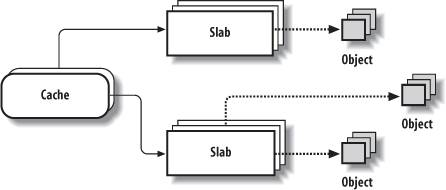
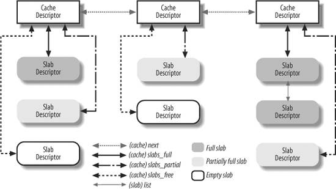
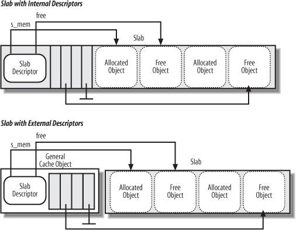
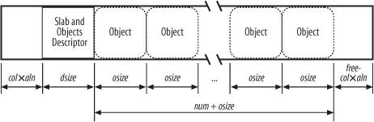

{% include JB/setup %}
{% raw %}
<div>


<a name="understandlk-CHP-8-SECT-2"></a>
<h3 class="docSection1Title">8.2. Memory Area Management</h3><a name="IDX-CHP-8-2178"></a>
<a name="IDX-CHP-8-2179"></a>
<a name="IDX-CHP-8-2180"></a>
<p class="docText1">This section deals with <span class="docEmphasis">memory areas</span><a name="IDX-CHP-8-2181"></a> 
that is, with sequences of memory cells having contiguous physical addresses and an arbitrary length.</p>
<p class="docText1">The buddy system algorithm adopts the page frame as the basic memory area. This is fine for dealing with relatively large memory requests, but how are we going to deal with requests for small memory areas, say a few tens or hundreds of bytes?</p>
<p class="docText1">Clearly, it would be quite wasteful to allocate a full page frame to store a few bytes. A better approach instead consists of introducing new data structures that describe how small memory areas are allocated within the same page frame. In doing so, we introduce a new problem called <span class="docEmphasis">internal fragmentation</span>. It is caused by a mismatch between the size of the memory request and the size of the memory area allocated to satisfy the request.</p>
<p class="docText1">A classical solution (adopted by early Linux versions) consists of providing memory areas whose sizes are geometrically distributed; in other words, the size depends on a power of 2 rather than on the size of the data to be stored. In this way, no matter what the memory request size is, we can ensure that the internal fragmentation is always smaller than 50 percent. Following this approach, the kernel creates 13 geometrically distributed lists of free memory areas whose sizes range from 32 to 131, 072 bytes. The buddy system is invoked both to obtain additional page frames needed to store new memory areas and, conversely, to release page frames that no longer contain memory areas. A dynamic list is used to keep track of the free memory areas contained in each page frame.</p>
<a name="understandlk-CHP-8-SECT-2.1"></a>
<h4 class="docSection2Title">8.2.1. The Slab Allocator</h4><a name="IDX-CHP-8-2182"></a>
<a name="IDX-CHP-8-2183"></a>
<a name="IDX-CHP-8-2184"></a>
<p class="docText1">Running a memory area allocation algorithm on top of the buddy algorithm is not particularly efficient. A better algorithm is derived from the <span class="docEmphasis">slab allocator</span><a name="IDX-CHP-8-2185"></a> 
 schema that was adopted for the first time in the Sun Microsystems Solaris<a name="IDX-CHP-8-2186"></a> 
 2.4 operating system. It is based on the following premises:</p>
<ul class="calibre11"><li class="calibre12"><p class="docText1">The type of data to be stored may affect how memory areas are allocated; for instance, when allocating a page frame to a User Mode process, the kernel invokes the <tt class="calibre25">get_zeroed_page( )</tt> function, which fills the page with zeros.</p><p class="docText1">The concept of a slab allocator expands upon this idea and views the memory areas as <span class="docEmphasis">objects</span> consisting of both a set of data structures and a couple of functions or methods called the <span class="docEmphasis">constructor</span> and <span class="docEmphasis">destructor</span>. The former initializes the memory area while the latter deinitializes it.</p><p class="docText1">To avoid initializing objects repeatedly, the slab allocator does not discard the objects that have been allocated and then released but instead saves them in memory. When a new object is then requested, it can be taken from memory without having to be reinitialized.</p></li><li class="calibre12"><p class="docText1">The kernel functions tend to request memory areas of the same type repeatedly. For instance, whenever the kernel creates a new process, it allocates memory areas for some fixed size tables such as the process descriptor, the open file object, and so on (see <a class="pcalibre5 docLink pcalibre1" href="understandlk-CHP-3.html#understandlk-CHP-3">Chapter 3</a>). When a process terminates, the memory areas used to contain these tables can be reused. Because processes are created and destroyed quite frequently, without the slab allocator, the kernel wastes time allocating and deallocating the page frames containing the same memory areas repeatedly; the slab allocator allows them to be saved in a cache and reused quickly.</p></li><li class="calibre12"><p class="docText1">Requests for memory areas can be classified according to their frequency. Requests of a particular size that are expected to occur frequently can be handled most efficiently by creating a set of special-purpose objects that have the right size, thus avoiding internal fragmentation. Meanwhile, sizes that are rarely encountered can be handled through an allocation scheme based on objects in a series of geometrically distributed sizes (such as the power-of-2 sizes used in early Linux versions), even if this approach leads to internal fragmentation.</p></li><li class="calibre12"><p class="docText1">There is another subtle bonus in introducing objects whose sizes are not geometrically distributed: the initial addresses of the data structures are less prone to be concentrated on physical addresses whose values are a power of 2. This, in turn, leads to better performance by the processor hardware cache.</p></li><li class="calibre12"><p class="docText1">Hardware cache performance creates an additional reason for limiting calls to the buddy system allocator as much as possible. Every call to a buddy system function "dirties" the hardware cache, thus increasing the average memory access time. The impact of a kernel function on the hardware cache is called the function <span class="docEmphasis">footprint</span>; it is defined as the percentage of cache overwritten by the function when it terminates. Clearly, large footprints lead to a slower execution of the code executed right after the kernel function, because the hardware cache is by now filled with useless information.</p></li></ul>
<p class="docText1">The slab allocator groups objects into <span class="docEmphasis">caches</span><a name="IDX-CHP-8-2187"></a> 
. Each cache is a "store" of objects of the same type. For instance, when a file is opened, the memory area needed to store the corresponding "open file" object is taken from a slab allocator cache named <span class="docEmphasis">filp</span> (for "file pointer").</p>
<p class="docText1">The area of main memory that contains a cache is divided into <span class="docEmphasis">slabs</span><a name="IDX-CHP-8-2188"></a> 
; each slab consists of one or more contiguous page frames that contain both allocated and free objects (see <a class="pcalibre5 docLink pcalibre1" href="#understandlk-CHP-8-FIG-3">Figure 8-3</a>).</p>
<a name="understandlk-CHP-8-FIG-3"></a><p class="calibre14"><center class="calibre8">
<h5 class="docFigureTitle">Figure 8-3. The slab allocator components</h5>
</center></p><br class="calibre7"/>
<p class="docText1">As we'll see in <a class="pcalibre5 docLink pcalibre1" href="understandlk-CHP-17.html#understandlk-CHP-17">Chapter 17</a>, the kernel periodically scans the caches and releases the page frames corresponding to empty slabs.</p>
<a name="understandlk-CHP-8-SECT-2.2"></a>
<h4 class="docSection2Title">8.2.2. Cache Descriptor</h4><a name="IDX-CHP-8-2189"></a>
<a name="IDX-CHP-8-2190"></a>
<a name="IDX-CHP-8-2191"></a>
<a name="IDX-CHP-8-2192"></a>
<a name="IDX-CHP-8-2193"></a>
<a name="IDX-CHP-8-2194"></a>
<p class="docText1">Each cache is described by a structure of type <tt class="calibre25">kmem_cache_t</tt> (which is equivalent to the type <tt class="calibre25">struct kmem_cache_s</tt>), whose fields are listed in <a class="pcalibre5 docLink pcalibre1" href="#understandlk-CHP-8-TABLE-8">Table 8-8</a>. We omitted from the table several fields used for collecting statistical information and for debugging.</p>
<a name="understandlk-CHP-8-TABLE-8"></a><p class="calibre14"><table cellspacing="0" frame="hsides" rules="all" cellpadding="4" width="100%" class="calibre15"><caption class="calibre33"><h5 class="docFigureTitle">Table 8-8. The fields of the kmem_cache_t descriptor</h5></caption><colgroup class="calibre16"><col class="calibre17"/><col class="calibre17"/><col class="calibre17"/></colgroup><thead class="calibre18"><tr class="calibre34"><th class="thead" scope="col"><p class="docText1"><span class="calibre5">Type</span></p></th><th class="thead" scope="col"><p class="docText1"><span class="calibre5">Name</span></p></th><th class="thead" scope="col"><p class="docText1"><span class="calibre5">Description</span></p></th></tr></thead><tr class="calibre2"><td class="docTableCell"><p class="docText2"><tt class="calibre25">struct</tt></p><p class="docText2"><tt class="calibre25">array_cache * []</tt></p></td><td class="docTableCell"><p class="docText2"><tt class="calibre25">array</tt></p></td><td class="docTableCell"><p class="docText2">Per-CPU array of pointers to local caches of free objects (see the section "<a class="pcalibre5 docLink pcalibre1" href="#understandlk-CHP-8-SECT-2.11">Local Caches of Free Slab Objects</a>" later in this chapter).</p></td></tr><tr class="calibre2"><td class="docTableCell"><p class="docText2"><tt class="calibre25">unsigned int</tt></p></td><td class="docTableCell"><p class="docText2"><tt class="calibre25">batchcount</tt></p></td><td class="docTableCell"><p class="docText2">Number of objects to be transferred in bulk to or from the local caches.</p></td></tr><tr class="calibre2"><td class="docTableCell"><p class="docText2"><tt class="calibre25">unsigned int</tt></p></td><td class="docTableCell"><p class="docText2"><tt class="calibre25">limit</tt></p></td><td class="docTableCell"><p class="docText2">Maximum number of free objects in the local caches. This is tunable.</p></td></tr><tr class="calibre2"><td class="docTableCell"><p class="docText2"><tt class="calibre25">struct kmem_list3</tt></p></td><td class="docTableCell"><p class="docText2"><tt class="calibre25">lists</tt></p></td><td class="docTableCell"><p class="docText2">See next table.</p></td></tr><tr class="calibre2"><td class="docTableCell"><p class="docText2"><tt class="calibre25">unsigned int</tt></p></td><td class="docTableCell"><p class="docText2"><tt class="calibre25">objsize</tt></p></td><td class="docTableCell"><p class="docText2">Size of the objects included in the cache.</p></td></tr><tr class="calibre2"><td class="docTableCell"><p class="docText2"><tt class="calibre25">unsigned int</tt></p></td><td class="docTableCell"><p class="docText2">flags</p></td><td class="docTableCell"><p class="docText2">Set of flags that describes permanent properties of the cache.</p></td></tr><tr class="calibre2"><td class="docTableCell"><p class="docText2"><tt class="calibre25">unsigned int</tt></p></td><td class="docTableCell"><p class="docText2">num</p></td><td class="docTableCell"><p class="docText2">Number of objects packed into a single slab. (All slabs of the cache have the same size.)</p></td></tr><tr class="calibre2"><td class="docTableCell"><p class="docText2"><tt class="calibre25">unsigned int</tt></p></td><td class="docTableCell"><p class="docText2">free_limit</p></td><td class="docTableCell"><p class="docText2">Upper limit of free objects in the whole slab cache.</p></td></tr><tr class="calibre2"><td class="docTableCell"><p class="docText2">spinlock_t</p></td><td class="docTableCell"><p class="docText2">spinlock</p></td><td class="docTableCell"><p class="docText2">Cache spin lock.</p></td></tr><tr class="calibre2"><td class="docTableCell"><p class="docText2"><tt class="calibre25">unsigned int</tt></p></td><td class="docTableCell"><p class="docText2">gfporder</p></td><td class="docTableCell"><p class="docText2">Logarithm of the number of contiguous page frames included in a single slab.</p></td></tr><tr class="calibre2"><td class="docTableCell"><p class="docText2"><tt class="calibre25">unsigned int</tt></p></td><td class="docTableCell"><p class="docText2">gfpflags</p></td><td class="docTableCell"><p class="docText2">Set of flags passed to the buddy system function when allocating page frames.</p></td></tr><tr class="calibre2"><td class="docTableCell"><p class="docText2"><tt class="calibre25">size_t</tt></p></td><td class="docTableCell"><p class="docText2">colour</p></td><td class="docTableCell"><p class="docText2">Number of colors for the slabs (see the section "<a class="pcalibre5 docLink pcalibre1" href="#understandlk-CHP-8-SECT-2.10">Slab Coloring</a>" later in this chapter).</p></td></tr><tr class="calibre2"><td class="docTableCell"><p class="docText2"><tt class="calibre25">unsigned int</tt></p></td><td class="docTableCell"><p class="docText2">colour_off</p></td><td class="docTableCell"><p class="docText2">Basic alignment offset in the slabs.</p></td></tr><tr class="calibre2"><td class="docTableCell"><p class="docText2"><tt class="calibre25">unsigned int</tt></p></td><td class="docTableCell"><p class="docText2">colour_next</p></td><td class="docTableCell"><p class="docText2">Color to use for the next allocated slab.</p></td></tr><tr class="calibre2"><td class="docTableCell"><p class="docText2">kmem_cache_t *</p></td><td class="docTableCell"><p class="docText2">slabp_cache</p></td><td class="docTableCell"><p class="docText2">Pointer to the general slab cache containing the slab descriptors (<tt class="calibre25">NULL</tt> if internal slab descriptors are used; see next section).</p></td></tr><tr class="calibre2"><td class="docTableCell"><p class="docText2">unsigned int</p></td><td class="docTableCell"><p class="docText2">slab_size</p></td><td class="docTableCell"><p class="docText2">The size of a single slab.</p></td></tr><tr class="calibre2"><td class="docTableCell"><p class="docText2"><tt class="calibre25">unsigned int</tt></p></td><td class="docTableCell"><p class="docText2">dflags</p></td><td class="docTableCell"><p class="docText2">Set of flags that describe dynamic properties of the cache.</p></td></tr><tr class="calibre2"><td class="docTableCell"><p class="docText2">void *</p></td><td class="docTableCell"><p class="docText2">ctor</p></td><td class="docTableCell"><p class="docText2">Pointer to constructor method associated with the cache.</p></td></tr><tr class="calibre2"><td class="docTableCell"><p class="docText2">void *</p></td><td class="docTableCell"><p class="docText2">dtor</p></td><td class="docTableCell"><p class="docText2">Pointer to destructor method associated with the cache.</p></td></tr><tr class="calibre2"><td class="docTableCell"><p class="docText2">const char *</p></td><td class="docTableCell"><p class="docText2">name</p></td><td class="docTableCell"><p class="docText2">Character array storing the name of the cache.</p></td></tr><tr class="calibre2"><td class="docTableCell"><p class="docText2">struct list_head</p></td><td class="docTableCell"><p class="docText2">next</p></td><td class="docTableCell"><p class="docText2">Pointers for the doubly linked list of cache descriptors.</p></td></tr></table></p><br class="calibre7"/>
<p class="docText1">The <tt class="calibre25">lists</tt> field of the <tt class="calibre25">kmem_cache_t</tt> descriptor, in turn, is a structure whose fields are listed in <a class="pcalibre5 docLink pcalibre1" href="#understandlk-CHP-8-TABLE-9">Table 8-9</a>.</p>
<a name="understandlk-CHP-8-TABLE-9"></a><p class="calibre14"><table cellspacing="0" frame="hsides" rules="all" cellpadding="4" width="100%" class="calibre15"><caption class="calibre33"><h5 class="docFigureTitle">Table 8-9. The fields of the kmem_list3 structure</h5></caption><colgroup class="calibre16"><col class="calibre17"/><col class="calibre17"/><col class="calibre17"/></colgroup><thead class="calibre18"><tr class="calibre34"><th class="thead" scope="col"><p class="docText1"><span class="calibre5">Type</span></p></th><th class="thead" scope="col"><p class="docText1"><span class="calibre5">Name</span></p></th><th class="thead" scope="col"><p class="docText1"><span class="calibre5">Description</span></p></th></tr></thead><tr class="calibre2"><td class="docTableCell"><p class="docText2">struct list_head</p></td><td class="docTableCell"><p class="docText2">slabs_partial</p></td><td class="docTableCell"><p class="docText2">Doubly linked circular list of slab descriptors with both free and nonfree objects</p></td></tr><tr class="calibre2"><td class="docTableCell"><p class="docText2">struct list_head</p></td><td class="docTableCell"><p class="docText2">slabs_full</p></td><td class="docTableCell"><p class="docText2">Doubly linked circular list of slab descriptors with no free objects</p></td></tr><tr class="calibre2"><td class="docTableCell"><p class="docText2">struct list_head</p></td><td class="docTableCell"><p class="docText2"><tt class="calibre25">slabs_free</tt></p></td><td class="docTableCell"><p class="docText2">Doubly linked circular list of slab descriptors with free objects only</p></td></tr><tr class="calibre2"><td class="docTableCell"><p class="docText2"><tt class="calibre25">unsigned long</tt></p></td><td class="docTableCell"><p class="docText2"><tt class="calibre25">free_objects</tt></p></td><td class="docTableCell"><p class="docText2">Number of free objects in the cache</p></td></tr><tr class="calibre2"><td class="docTableCell"><p class="docText2"><tt class="calibre25">int</tt></p></td><td class="docTableCell"><p class="docText2"><tt class="calibre25">free_touched</tt></p></td><td class="docTableCell"><p class="docText2">Used by the slab allocator's page reclaiming algorithm (see <a class="pcalibre5 docLink pcalibre1" href="understandlk-CHP-17.html#understandlk-CHP-17">Chapter 17</a>)</p></td></tr><tr class="calibre2"><td class="docTableCell"><p class="docText2"><tt class="calibre25">unsigned long</tt></p></td><td class="docTableCell"><p class="docText2"><tt class="calibre25">next_reap</tt></p></td><td class="docTableCell"><p class="docText2">Used by the slab allocator's page reclaiming algorithm (see <a class="pcalibre5 docLink pcalibre1" href="understandlk-CHP-17.html#understandlk-CHP-17">Chapter 17</a>)</p></td></tr><tr class="calibre2"><td class="docTableCell"><p class="docText2"><tt class="calibre25">struct</tt></p><p class="docText2"><tt class="calibre25">array_cache *</tt></p></td><td class="docTableCell"><p class="docText2"><tt class="calibre25">shared</tt></p></td><td class="docTableCell"><p class="docText2">Pointer to a local cache shared by all CPUs (see the later section "<a class="pcalibre5 docLink pcalibre1" href="#understandlk-CHP-8-SECT-2.11">Local Caches of Free Slab Objects</a>")</p></td></tr></table></p><br class="calibre7"/>
<a name="understandlk-CHP-8-SECT-2.3"></a>
<h4 class="docSection2Title">8.2.3. Slab Descriptor</h4><a name="IDX-CHP-8-2195"></a>
<a name="IDX-CHP-8-2196"></a>
<a name="IDX-CHP-8-2197"></a>
<a name="IDX-CHP-8-2198"></a>
<p class="docText1">Each slab of a cache has its own descriptor of type <tt class="calibre25">slab</tt> illustrated in <a class="pcalibre5 docLink pcalibre1" href="#understandlk-CHP-8-TABLE-10">Table 8-10</a>.</p>
<a name="understandlk-CHP-8-TABLE-10"></a><p class="calibre14"><table cellspacing="0" frame="hsides" rules="all" cellpadding="4" width="100%" class="calibre15"><caption class="calibre33"><h5 class="docFigureTitle">Table 8-10. The fields of the slab descriptor</h5></caption><colgroup class="calibre16"><col class="calibre17"/><col class="calibre17"/><col class="calibre17"/></colgroup><thead class="calibre18"><tr class="calibre34"><th class="thead" scope="col"><p class="docText1"><span class="calibre5">Type</span></p></th><th class="thead" scope="col"><p class="docText1"><span class="calibre5">Name</span></p></th><th class="thead" scope="col"><p class="docText1"><span class="calibre5">Description</span></p></th></tr></thead><tr class="calibre2"><td class="docTableCell"><p class="docText2"><tt class="calibre25">struct list_head</tt></p></td><td class="docTableCell"><p class="docText2"><tt class="calibre25">list</tt></p></td><td class="docTableCell"><p class="docText2">Pointers for one of the three doubly linked list of slab descriptors<a name="IDX-CHP-8-2199"></a> 
 (either the <tt class="calibre25">slabs_full</tt>, <tt class="calibre25">slabs_partial</tt>, or <tt class="calibre25">slabs_free</tt> list in the <tt class="calibre25">kmem_list3</tt> structure of the cache descriptor)</p></td></tr><tr class="calibre2"><td class="docTableCell"><p class="docText2"><tt class="calibre25">unsigned long</tt></p></td><td class="docTableCell"><p class="docText2"><tt class="calibre25">colouroff</tt></p></td><td class="docTableCell"><p class="docText2">Offset of the first object in the slab (see the section "<a class="pcalibre5 docLink pcalibre1" href="#understandlk-CHP-8-SECT-2.10">Slab Coloring</a>" later in this chapter)</p></td></tr><tr class="calibre2"><td class="docTableCell"><p class="docText2"><tt class="calibre25">void *</tt></p></td><td class="docTableCell"><p class="docText2"><tt class="calibre25">s_mem</tt></p></td><td class="docTableCell"><p class="docText2">Address of first object (either allocated or free) in the slab</p></td></tr><tr class="calibre2"><td class="docTableCell"><p class="docText2"><tt class="calibre25">unsigned int</tt></p></td><td class="docTableCell"><p class="docText2"><tt class="calibre25">inuse</tt></p></td><td class="docTableCell"><p class="docText2">Number of objects in the slab that are currently used (not free)</p></td></tr><tr class="calibre2"><td class="docTableCell"><p class="docText2"><tt class="calibre25">unsigned int</tt></p></td><td class="docTableCell"><p class="docText2"><tt class="calibre25">free</tt></p></td><td class="docTableCell"><p class="docText2">Index of next free object in the slab, or <tt class="calibre25">BUFCTL_END</tt> if there are no free objects left (see the section "<a class="pcalibre5 docLink pcalibre1" href="#understandlk-CHP-8-SECT-2.8">Object Descriptor</a>" later in this chapter)</p></td></tr></table></p><br class="calibre7"/>
<p class="docText1">Slab descriptors can be stored in two possible places:</p>
<a name="IDX-CHP-8-2200"></a><dl class="docText1"><dt class="calibre7"><br class="calibre7"/><p class="calibre14"><span class="docPubcolor"><span class="docEmphasis">External slab descriptor</span></span></p></dt>
<dd class="calibre20"><p class="docList">Stored outside the slab, in one of the general caches<a name="IDX-CHP-8-2200"></a> 
 not suitable for ISA DMA pointed to by <tt class="calibre25">cache_sizes</tt> (see the next section).</p></dd><dt class="calibre7"><br class="calibre7"/><p class="calibre14"><span class="docPubcolor"><span class="docEmphasis">Internal slab descriptor</span></span></p></dt>
<dd class="calibre20"><p class="docList">Stored inside the slab, at the beginning of the first page frame assigned to the slab.</p></dd></dl>
<p class="docText1">The slab allocator chooses the second solution when the size of the objects is smaller than 512MB or when internal<a name="IDX-CHP-8-2201"></a> 
 fragmentation leaves enough space for the slab descriptor and the object descriptors (as described later)inside the slab. The <tt class="calibre25">CFLGS_OFF_SLAB</tt> flag in the <tt class="calibre25">flags</tt> field of the cache descriptor is set to one if the slab descriptor is stored outside the slab; it is set to zero otherwise.</p>
<p class="docText1"><a class="pcalibre5 docLink pcalibre1" href="#understandlk-CHP-8-FIG-4">Figure 8-4</a> illustrates the major relationships between cache and slab descriptors. Full slabs, partially full slabs, and free slabs are linked in different lists.</p>
<a name="understandlk-CHP-8-SECT-2.4"></a>
<h4 class="docSection2Title">8.2.4. General and Specific Caches</h4><a name="IDX-CHP-8-2202"></a>
<a name="IDX-CHP-8-2203"></a>
<a name="IDX-CHP-8-2204"></a>
<a name="IDX-CHP-8-2205"></a>
<a name="IDX-CHP-8-2206"></a>
<a name="IDX-CHP-8-2207"></a>
<a name="IDX-CHP-8-2208"></a>
<a name="IDX-CHP-8-2209"></a>
<p class="docText1">Caches are divided into two types: general and specific. <span class="docEmphasis">General caches</span> are used only by the slab allocator for its own purposes, while <span class="docEmphasis">specific caches</span><a name="IDX-CHP-8-2210"></a> 
 are used by the remaining parts of the kernel.</p>
<a name="understandlk-CHP-8-FIG-4"></a><p class="calibre14"><center class="calibre8">
<h5 class="docFigureTitle">Figure 8-4. Relationship between cache and slab descriptors</h5>
</center></p><br class="calibre7"/>
<p class="docText1">The general caches are:</p>
<ul class="calibre11"><li class="calibre12"><p class="docText1">A first cache called <span class="docEmphasis">kmem_cache</span> whose objects are the cache descriptors of the remaining caches used by the kernel. The <tt class="calibre25">cache_cache</tt> variable contains the descriptor of this special cache.</p></li><li class="calibre12"><p class="docText1">Several additional caches contain general purpose memory areas. The range of the memory area sizes typically includes 13 geometrically distributed sizes. A table called <tt class="calibre25">malloc_sizes</tt> (whose elements are of type <tt class="calibre25">cache_sizes</tt>) points to 26 cache descriptors associated with memory areas of size 32, 64, 128, 256, 512, 1,024, 2,048, 4,096, 8,192, 16,384, 32,768, 65,536, and 131,072 bytes. For each size, there are two caches: one suitable for ISA DMA allocations and the other for normal allocations.</p></li></ul>
<p class="docText1">The <tt class="calibre25">kmem_cache_init( )</tt> function is invoked during system initialization to set up the general caches.</p>
<p class="docText1">Specific caches are created by the <tt class="calibre25">kmem_cache_create( )</tt> function. Depending on the parameters, the function first determines the best way to handle the new cache (for instance, whether to include the slab descriptor inside or outside of the slab). It then allocates a cache descriptor for the new cache from the <tt class="calibre25">cache_cache</tt> general cache and inserts the descriptor in the <tt class="calibre25">cache_chain</tt> list of cache descriptors (the insertion is done after having acquired the <tt class="calibre25">cache_chain_sem</tt> semaphore that protects the list from concurrent accesses).</p>
<p class="docText1">It is also possible to destroy a cache and remove it from the <tt class="calibre25">cache_chain</tt> list by invoking <tt class="calibre25">kmem_cache_destroy( )</tt>. This function is mostly useful to modules that create their own caches when loaded and destroy them when unloaded. To avoid wasting memory space, the kernel must destroy all slabs before destroying the cache itself. The <tt class="calibre25">kmem_cache_shrink( )</tt> function destroys all the slabs in a cache by invoking <tt class="calibre25">slab_destroy( )</tt> iteratively (see the later section "<a class="pcalibre5 docLink pcalibre1" href="#understandlk-CHP-8-SECT-2.7">Releasing a Slab from a Cache</a>").</p>
<p class="docText1">The names of all general and specific caches can be obtained at runtime by reading <i class="docEmphasis">/proc/slabinfo</i>; this file also specifies the number of free objects and the number of allocated objects in each cache.</p>
<a name="understandlk-CHP-8-SECT-2.5"></a>
<h4 class="docSection2Title">8.2.5. Interfacing the Slab Allocator with the Zoned Page Frame Allocator</h4><a name="IDX-CHP-8-2211"></a>
<a name="IDX-CHP-8-2212"></a>
<a name="IDX-CHP-8-2213"></a>
<a name="IDX-CHP-8-2214"></a>
<a name="IDX-CHP-8-2215"></a>
<p class="docText1">When the slab allocator creates a new slab, it relies on the zoned page frame allocator to obtain a group of free contiguous page frames. For this purpose, it invokes the <tt class="calibre25">kmem_getpages( )</tt> function, which is essentially equivalent, on a UMA system, to the following code fragment:</p>
<pre class="calibre27">
void * kmem_getpages(kmem_cache_t *cachep, int flags)
{
    struct page *page;
    int i;

    flags |= cachep-&gt;gfpflags;
    page = alloc_pages(flags, cachep-&gt;gfporder);
    if (!page)
        return NULL;
    i = (1 &lt;&lt; cache-&gt;gfporder);
    if (cachep-&gt;flags &amp; SLAB_RECLAIM_ACCOUNT)
        atomic_add(i, &amp;slab_reclaim_pages);
    while (i--)
            SetPageSlab(page++);
    return page_address(page);
}</pre><br class="calibre7"/>
<p class="docText1">The two parameters have the following meaning:</p>
<dl class="docText1"><dt class="calibre7"><br class="calibre7"/><p class="calibre14"><span class="docPubcolor"><span class="docPubcolor"><span class="docMonofont">cachep</span></span></span></p></dt>
<dd class="calibre20"><p class="docList">Points to the cache descriptor of the cache that needs additional page frames (the number of required page frames is determined by the order in the <tt class="calibre25">cachep-&gt;gfporder</tt> field).</p></dd><dt class="calibre7"><br class="calibre7"/><p class="calibre14"><span class="docPubcolor"><span class="docPubcolor"><span class="docMonofont">flags</span></span></span></p></dt>
<dd class="calibre20"><p class="docList">Specifies how the page frame is requested (see the section "<a class="pcalibre5 docLink pcalibre1" href="understandlk-CHP-8-SECT-1.html#understandlk-CHP-8-SECT-1.5">The Zoned Page Frame Allocator</a>" earlier in this chapter). This set of flags is combined with the specific cache allocation flags stored in the <tt class="calibre25">gfpflags</tt> field of the cache descriptor.</p></dd></dl>
<p class="docText1">The size of the memory allocation request is specified by the <tt class="calibre25">gfporder</tt> field of the cache descriptor, which encodes the size of a slab in the cache.<sup class="docFootnote"><a class="pcalibre5 docLink pcalibre1" href="#understandlk-CHP-8-FN7">[*]</a></sup> If the slab cache has been created with the <tt class="calibre25">SLAB_RECLAIM_ACCOUNT</tt> flag set, the page frames assigned to the slabs are accounted for as reclaimable pages when the kernel checks whether there is enough memory to satisfy some User Mode requests. The function also sets the <tt class="calibre25">PG_slab</tt> flag in the page descriptors of the allocated page frames.</p><blockquote class="calibre22"><p class="docFootnote1"><sup class="calibre24"><a name="understandlk-CHP-8-FN7">[*]</a></sup> Notice that it is not possible to allocate page frames from the <tt class="calibre42">ZONE_HIGHMEM</tt> memory zone, because the <tt class="calibre42">kmem_getpages( )</tt> function returns the linear address yielded by the <tt class="calibre42">page_address( )</tt> function; as explained in the section "<a class="pcalibre5 docLink pcalibre1" href="understandlk-CHP-8-SECT-1.html#understandlk-CHP-8-SECT-1.6">Kernel Mappings of High-Memory Page Frames</a>" earlier in this chapter, this function returns <tt class="calibre42">NULL</tt> for unmapped high-memory page frames.</p></blockquote>
<p class="docText1">In the reverse operation, page frames assigned to a slab can be released (see the section "<a class="pcalibre5 docLink pcalibre1" href="#understandlk-CHP-8-SECT-2.7">Releasing a Slab from a Cache</a>" later in this chapter) by invoking the <tt class="calibre25">kmem_freepages( )</tt> function:</p>
<pre class="calibre27">
void kmem_freepages(kmem_cache_t *cachep, void *addr)
{
    unsigned long i = (1&lt;&lt;cachep-&gt;gfporder);
    struct page *page = virt_to_page(addr);

    if (current-&gt;reclaim_state)
        current-&gt;reclaim_state-&gt;reclaimed_slab += i;
    while (i--)
        ClearPageSlab(page++);
    free_pages((unsigned long) addr, cachep-&gt;gfporder);
    if (cachep-&gt;flags &amp; SLAB_RECLAIM_ACCOUNT)
        atomic_sub(1&lt;&lt;cachep-&gt;gfporder, &amp;slab_reclaim_pages);
}</pre><br class="calibre7"/>
<p class="docText1">The function releases the page frames, starting from the one having the linear address <tt class="calibre25">addr</tt>, that had been allocated to the slab of the cache identified by <tt class="calibre25">cachep</tt>. If the current process is performing memory reclaiming (<tt class="calibre25">current-&gt;reclaim_state</tt> field not <tt class="calibre25">NULL</tt>), the <tt class="calibre25">reclaimed_slab</tt> field of the <tt class="calibre25">reclaim_state</tt> structure is properly increased, so that the pages just freed can be accounted for by the page frame reclaiming algorithm (see the section "<a class="pcalibre5 docLink pcalibre1" href="understandlk-CHP-17-SECT-3.html#understandlk-CHP-17-SECT-3.2">Low On Memory Reclaiming</a>" in <a class="pcalibre5 docLink pcalibre1" href="understandlk-CHP-17.html#understandlk-CHP-17">Chapter 17</a>). Moreover, if the <tt class="calibre25">SLAB_RECLAIM_ACCOUNT</tt> flag is set (see above), the <tt class="calibre25">slab_reclaim_pages</tt> variable is properly decreased.</p>
<a name="understandlk-CHP-8-SECT-2.6"></a>
<h4 class="docSection2Title">8.2.6. Allocating a Slab to a Cache</h4><a name="IDX-CHP-8-2216"></a>
<a name="IDX-CHP-8-2217"></a>
<a name="IDX-CHP-8-2218"></a>
<p class="docText1">A newly created cache does not contain a slab and therefore does not contain any free objects. New slabs are assigned to a cache only when both of the following are true:</p>
<ul class="calibre11"><li class="calibre12"><p class="docText1">A request has been issued to allocate a new object.</p></li><li class="calibre12"><p class="docText1">The cache does not include a free object.</p></li></ul>
<p class="docText1">Under these circumstances, the slab allocator assigns a new slab to the cache by invoking <tt class="calibre25">cache_grow( )</tt>. This function calls <tt class="calibre25">kmem_ getpages( )</tt> to obtain from the zoned page frame allocator the group of page frames needed to store a single slab; it then calls <tt class="calibre25">alloc_slabmgmt( )</tt> to get a new slab descriptor. If the <tt class="calibre25">CFLGS_OFF_SLAB</tt> flag of the cache descriptor is set, the slab descriptor is allocated from the general cache pointed to by the <tt class="calibre25">slabp_cache</tt> field of the cache descriptor; otherwise, the slab descriptor is allocated in the first page frame of the slab.</p>
<p class="docText1">The kernel must be able to determine, given a page frame, whether it is used by the slab allocator and, if so, to derive quickly the addresses of the corresponding cache and slab descriptors. Therefore, <tt class="calibre25">cache_ grow( )</tt> scans all page descriptors of the page frames assigned to the new slab, and loads the <tt class="calibre25">next</tt> and <tt class="calibre25">prev</tt> subfields of the <tt class="calibre25">lru</tt> fields in the page descriptors with the addresses of, respectively, the cache descriptor and the slab descriptor. This works correctly because the <tt class="calibre25">lru</tt> field is used by functions of the buddy system only when the page frame is free, while page frames handled by the slab allocator functions have the <tt class="calibre25">PG_slab</tt> flag set and are not free as far as the buddy system is concerned.<sup class="docFootnote"><a class="pcalibre5 docLink pcalibre1" href="#understandlk-CHP-8-FN8">[*]</a></sup> The opposite questiongiven a slab in a cache, which are the page frames that implement it?can be answered by using the <tt class="calibre25">s_mem</tt> field of the slab descriptor and the <tt class="calibre25">gfporder</tt> field (the size of a slab) of the cache descriptor.</p><blockquote class="calibre22"><p class="docFootnote1"><sup class="calibre24"><a name="understandlk-CHP-8-FN8">[*]</a></sup> As we'll in <a class="pcalibre5 docLink pcalibre1" href="understandlk-CHP-17.html#understandlk-CHP-17">Chapter 17</a>, the <tt class="calibre42">lru</tt> field is also used by the page frame reclaiming algorithm.</p></blockquote>
<p class="docText1">Next, <tt class="calibre25">cache_grow( )</tt> calls <tt class="calibre25">cache_init_objs( )</tt>, which applies the constructor method (if defined) to all the objects contained in the new slab.</p>
<p class="docText1">Finally, <tt class="calibre25">cache_ grow( )</tt> calls <tt class="calibre25">list_add_tail( )</tt> to add the newly obtained slab descriptor <tt class="calibre25">*slabp</tt> at the end of the fully free slab list of the cache descriptor <tt class="calibre25">*cachep</tt>, and updates the counter of free objects in the cache:</p>
<pre class="calibre27">
list_add_tail(&amp;slabp-&gt;list, &amp;cachep-&gt;lists-&gt;slabs_free);
cachep-&gt;lists-&gt;free_objects += cachep-&gt;num;
</pre><br class="calibre7"/>
<a name="understandlk-CHP-8-SECT-2.7"></a>
<h4 class="docSection2Title">8.2.7. Releasing a Slab from a Cache</h4><a name="IDX-CHP-8-2219"></a>
<a name="IDX-CHP-8-2220"></a>
<a name="IDX-CHP-8-2221"></a>
<a name="IDX-CHP-8-2222"></a>
<p class="docText1">Slabs can be destroyed in two cases:</p>
<ul class="calibre11"><li class="calibre12"><p class="docText1">There are too many free objects in the slab cache (see the later section "<a class="pcalibre5 docLink pcalibre1" href="#understandlk-CHP-8-SECT-2.7">Releasing a Slab from a Cache</a>").</p></li><li class="calibre12"><p class="docText1">A timer function invoked periodically determines that there are fully unused slabs that can be released (see <a class="pcalibre5 docLink pcalibre1" href="understandlk-CHP-17.html#understandlk-CHP-17">Chapter 17</a>).</p></li></ul>
<p class="docText1">In both cases, the <tt class="calibre25">slab_destroy( )</tt> function is invoked to destroy a slab and release the corresponding page frames to the zoned page frame allocator:</p>
<pre class="calibre27">
void slab_destroy(kmem_cache_t *cachep, slab_t *slabp)
{
    if (cachep-&gt;dtor) {
        int i;
        for (i = 0; i &lt; cachep-&gt;num; i++) {
            void* objp = slabp-&gt;s_mem+cachep-&gt;objsize*i;
            (cachep-&gt;dtor)(objp, cachep, 0);
        }
    }
    kmem_freepages(cachep, slabp-&gt;s_mem - slabp-&gt;colouroff);
    if (cachep-&gt;flags &amp; CFLGS_OFF_SLAB)
        kmem_cache_free(cachep-&gt;slabp_cache, slabp);
}</pre><br class="calibre7"/>
<p class="docText1">The function checks whether the cache has a destructor method for its objects (the <tt class="calibre25">dtor</tt> field is not <tt class="calibre25">NULL</tt>), in which case it applies the destructor to all the objects in the slab; the <tt class="calibre25">objp</tt> local variable keeps track of the currently examined object. Next, it calls <tt class="calibre25">kmem_freepages( )</tt>, which returns all the contiguous page frames used by the slab to the buddy system. Finally, if the slab descriptor is stored outside of the slab, the function releases it from the cache of slab descriptors<a name="IDX-CHP-8-2223"></a> 
.</p>
<p class="docText1">Actually, the function is slightly more complicated. For example, a slab cache can be created with the <tt class="calibre25">SLAB_DESTROY_BY_RCU</tt> flag, which means that slabs should be released in a deferred way by registering a callback with the <tt class="calibre25">call_rcu( )</tt> function (see the section "<a class="pcalibre5 docLink pcalibre1" href="understandlk-CHP-5-SECT-2.html#understandlk-CHP-5-SECT-2.7">Read-Copy Update (RCU)</a>" in <a class="pcalibre5 docLink pcalibre1" href="understandlk-CHP-5.html#understandlk-CHP-5">Chapter 5</a>). The callback function, in turn, invokes <tt class="calibre25">kmem_freepages()</tt> and, possibly, the <tt class="calibre25">kmem_cache_free()</tt>, as in the main case shown above.</p>
<a name="understandlk-CHP-8-SECT-2.8"></a>
<h4 class="docSection2Title">8.2.8. Object Descriptor</h4><a name="IDX-CHP-8-2224"></a>
<a name="IDX-CHP-8-2225"></a>
<a name="IDX-CHP-8-2226"></a>
<a name="IDX-CHP-8-2227"></a>
<a name="IDX-CHP-8-2228"></a>
<p class="docText1">Each object has a short descriptor of type <tt class="calibre25">kmem_bufctl_t</tt>. Object descriptors are stored in an array placed right after the corresponding slab descriptor. Thus, like the slab descriptors themselves, the object descriptors of a slab can be stored in two possible ways that are illustrated in <a class="pcalibre5 docLink pcalibre1" href="#understandlk-CHP-8-FIG-5">Figure 8-5</a>.</p>
<dl class="docText1"><dt class="calibre7"><br class="calibre7"/><p class="calibre14"><span class="docPubcolor"><span class="docEmphasis">External object descriptors</span></span></p></dt>
<dd class="calibre20"><p class="docList">Stored outside the slab, in the general cache pointed to by the <tt class="calibre25">slabp_cache</tt> field of the cache descriptor. The size of the memory area, and thus the particular general cache used to store object descriptors, depends on the number of objects stored in the slab (<tt class="calibre25">num</tt> field of the cache descriptor).</p></dd><dt class="calibre7"><br class="calibre7"/><p class="calibre14"><span class="docPubcolor"><span class="docEmphasis">Internal object descriptors</span></span></p></dt>
<dd class="calibre20"><p class="docList">Stored inside the slab, right before the objects they describe.</p></dd></dl>
<p class="docText1">The first object descriptor in the array describes the first object in the slab, and so on. An object descriptor is simply an unsigned short integer, which is meaningful only when the object is free. It contains the index of the next free object in the slab, thus implementing a simple list of free objects inside the slab. The object descriptor of the last element in the free object list is marked by the conventional value <tt class="calibre25">BUFCTL_END</tt> (<tt class="calibre25">0xffff</tt>).</p>
<a name="understandlk-CHP-8-FIG-5"></a><p class="calibre14"><center class="calibre8">
<h5 class="docFigureTitle">Figure 8-5. Relationships between slab and object descriptors</h5>
</center></p><br class="calibre7"/>
<a name="understandlk-CHP-8-SECT-2.9"></a>
<h4 class="docSection2Title">8.2.9. Aligning Objects in Memory</h4><a name="IDX-CHP-8-2229"></a>
<a name="IDX-CHP-8-2230"></a>
<a name="IDX-CHP-8-2231"></a>
<a name="IDX-CHP-8-2232"></a>
<a name="IDX-CHP-8-2233"></a>
<a name="IDX-CHP-8-2234"></a>
<p class="docText1">The objects managed by the slab allocator are <span class="docEmphasis">aligned</span> in memorythat is, they are stored in memory cells whose initial physical addresses are multiples of a given constant, which is usually a power of 2. This constant is called the <span class="docEmphasis">alignment factor</span>.</p>
<p class="docText1">The largest alignment factor allowed by the slab allocator is 4,096the page frame size. This means that objects can be aligned by referring to either their physical addresses or their linear addresses. In both cases, only the 12 least significant bits of the address may be altered by the alignment.</p>
<p class="docText1">Usually, microcomputers access memory cells more quickly if their physical addresses are aligned with respect to the word size (that is, to the width of the internal memory bus of the computer). Thus, by default, the <tt class="calibre25">kmem_cache_create( )</tt> function aligns objects according to the word size specified by the <tt class="calibre25">BYTES_PER_WORD</tt> macro. For 80 x 86 processors, the macro yields the value 4 because the word is 32 bits long.</p>
<p class="docText1">When creating a new slab cache, it's possible to specify that the objects included in it be aligned in the first-level hardware cache. To achieve this, the kernel sets the <tt class="calibre25">SLAB_HWCACHE_ALIGN</tt> cache descriptor flag. The <tt class="calibre25">kmem_cache_create( )</tt> function handles the request as follows:</p>
<ul class="calibre11"><li class="calibre12"><p class="docText1">If the object's size is greater than half of a cache line, it is aligned in RAM to a multiple of <tt class="calibre25">L1_CACHE_BYTES</tt>that is, at the beginning of the line.</p></li><li class="calibre12"><p class="docText1">Otherwise, the object size is rounded up to a submultiple of <tt class="calibre25">L1_CACHE_BYTES</tt>; this ensures that a small object will never span across two cache lines.</p></li></ul>
<p class="docText1">Clearly, what the slab allocator is doing here is trading memory space for access time; it gets better cache performance by artificially increasing the object size, thus causing additional internal fragmentation.</p>
<a name="understandlk-CHP-8-SECT-2.10"></a>
<h4 class="docSection2Title">8.2.10. Slab Coloring</h4>
<p class="docText1">We know from <a class="pcalibre5 docLink pcalibre1" href="understandlk-CHP-2.html#understandlk-CHP-2">Chapter 2</a> that the same hardware cache line maps many different blocks of RAM. In this chapter, we have also seen that objects of the same size end up being stored at the same offset within a cache. Objects that have the same offset within different slabs will, with a relatively high probability, end up mapped in the same cache line. The cache hardware might therefore waste memory cycles transferring two objects from the same cache line back and forth to different RAM locations, while other cache lines go underutilized. The slab allocator tries to reduce this unpleasant cache behavior by a policy called <span class="docEmphasis">slab coloring</span><a name="IDX-CHP-8-2235"></a> 
: different arbitrary values called <span class="docEmphasis">colors</span> are assigned to the slabs.</p>
<p class="docText1">Before examining slab coloring, we have to look at the layout of objects in the cache. Let's consider a cache whose objects are aligned in RAM. This means that the object address must be a multiple of a given positive value, say <span class="docEmphasis">aln</span>. Even taking the alignment constraint into account, there are many possible ways to place objects inside the slab. The choices depend on decisions made for the following variables:</p>
<dl class="docText1"><dt class="calibre7"><br class="calibre7"/><p class="calibre14"><span class="docPubcolor"><span class="docEmphasis">num</span></span></p></dt>
<dd class="calibre20"><p class="docList">Number of objects that can be stored in a slab (its value is in the <tt class="calibre25">num</tt> field of the cache descriptor).</p></dd><dt class="calibre7"><br class="calibre7"/><p class="calibre14"><span class="docPubcolor"><span class="docEmphasis">osize</span></span></p></dt>
<dd class="calibre20"><p class="docList">Object size, including the alignment bytes.</p></dd><dt class="calibre7"><br class="calibre7"/><p class="calibre14"><span class="docPubcolor"><span class="docEmphasis">dsize</span></span></p></dt>
<dd class="calibre20"><p class="docList">Slab descriptor size plus all object descriptors size, rounded up to the smallest multiple of the hardware cache line size. Its value is equal to 0 if the slab and object descriptors are stored outside of the slab.</p></dd><dt class="calibre7"><br class="calibre7"/><p class="calibre14"><span class="docPubcolor"><span class="docEmphasis">free</span></span></p></dt>
<dd class="calibre20"><p class="docList">Number of unused bytes (bytes not assigned to any object) inside the slab.</p></dd></dl>
<p class="docText1">The total length in bytes of a slab can then be expressed as:</p>
<pre class="calibre27">
<span class="docEmphasis">slab length</span> = (<span class="docEmphasis">num</span> x <span class="docEmphasis">osize</span>) + <span class="docEmphasis">dsize</span>+ <span class="docEmphasis">free</span>
</pre><br class="calibre7"/>
<p class="docText1"><span class="docEmphasis">free</span> is always smaller than <span class="docEmphasis">osize</span>, because otherwise, it would be possible to place additional objects inside the slab. However, <span class="docEmphasis">free</span> could be greater than <span class="docEmphasis">aln</span>.</p>
<p class="docText1">The slab allocator takes advantage of the <span class="docEmphasis">free</span> unused bytes to color the slab. The term "color" is used simply to subdivide the slabs and allow the memory allocator to spread objects out among different linear addresses. In this way, the kernel obtains the best possible performance from the microprocessor's hardware cache.</p>
<p class="docText1">Slabs having different colors store the first object of the slab in different memory locations, while satisfying the alignment constraint. The number of available colors is <span class="docEmphasis">free/aln</span> (this value is stored in the <tt class="calibre25">colour</tt> field of the cache descriptor). Thus, the first color is denoted as 0 and the last one is denoted as <span class="docEmphasis">(free / aln</span>)-1. (As a particular case, if <span class="docEmphasis">free</span> is lower than <span class="docEmphasis">aln</span>, <tt class="calibre25">colour</tt> is set to 0, nevertheless all slabs use color 0, thus really the number of colors is one.)</p>
<p class="docText1">If a slab is colored with color <span class="docEmphasis">col</span>, the offset of the first object (with respect to the slab initial address) is equal to <span class="docEmphasis">col</span>x <span class="docEmphasis">aln + dsize</span> bytes. <a class="pcalibre5 docLink pcalibre1" href="#understandlk-CHP-8-FIG-6">Figure 8-6</a> illustrates how the placement of objects inside the slab depends on the slab color. Coloring essentially leads to moving some of the free area of the slab from the end to the beginning.</p>
<a name="understandlk-CHP-8-FIG-6"></a><p class="calibre14"><center class="calibre8">
<h5 class="docFigureTitle">Figure 8-6. Slab with color col and alignment aln</h5>
</center></p><br class="calibre7"/>
<p class="docText1">Coloring works only when <span class="docEmphasis">free</span> is large enough. Clearly, if no alignment is required for the objects or if the number of unused bytes inside the slab is smaller than the required alignment (<span class="docEmphasis">free</span> &lt; <span class="docEmphasis">aln</span>), the only possible slab coloring is the one that has the color 0the one that assigns a zero offset to the first object.</p>
<p class="docText1">The various colors are distributed equally among slabs of a given object type by storing the current color in a field of the cache descriptor called <tt class="calibre25">colour_next</tt>. The <tt class="calibre25">cache_ grow( )</tt> function assigns the color specified by <tt class="calibre25">colour_next</tt> to a new slab and then increases the value of this field. After reaching <tt class="calibre25">colour</tt>, it wraps around again to 0. In this way, each slab is created with a different color from the previous one, up to the maximum available colors. The <tt class="calibre25">cache_grow( )</tt> function, moreover, gets the value <span class="docEmphasis">aln</span> from the <tt class="calibre25">colour_off</tt> field of the cache descriptor, computes <span class="docEmphasis">dsize</span> according to the number of objects inside the slab, and finally stores the value <span class="docEmphasis">col</span>x <span class="docEmphasis">aln + dsize</span> in the <tt class="calibre25">colouroff</tt> field of the slab descriptor.</p>
<a name="understandlk-CHP-8-SECT-2.11"></a>
<h4 class="docSection2Title">8.2.11. Local Caches of Free Slab Objects</h4><a name="IDX-CHP-8-2236"></a>
<p class="docText1">The Linux 2.6 implementation of the slab allocator for multiprocessor systems<a name="IDX-CHP-8-2237"></a> 
 differs from that of the original Solaris<a name="IDX-CHP-8-2238"></a> 
 2.4. To reduce spin lock contention among processors and to make better use of the hardware caches, each cache of the slab allocator includes a per-CPU data structure consisting of a small array of pointers to freed objects called the <span class="docEmphasis">slab local cache</span><a name="IDX-CHP-8-2239"></a> 
. Most allocations and releases of slab objects affect the local cache only; the slab data structures get involved only when the local cache underflows or overflows. This technique is quite similar to the one illustrated in the section "<a class="pcalibre5 docLink pcalibre1" href="understandlk-CHP-8-SECT-1.html#understandlk-CHP-8-SECT-1.8">The Per-CPU Page Frame Cache</a>" earlier in this chapter.</p>
<p class="docText1">The <tt class="calibre25">array</tt> field of the cache descriptor is an array of pointers to <tt class="calibre25">array_cache</tt> data structures, one element for each CPU in the system. Each <tt class="calibre25">array_cache</tt> data structure is a descriptor of the local cache of free objects, whose fields are illustrated in <a class="pcalibre5 docLink pcalibre1" href="#understandlk-CHP-8-TABLE-11">Table 8-11</a>.</p>
<a name="understandlk-CHP-8-TABLE-11"></a><p class="calibre14"><table cellspacing="0" frame="hsides" rules="all" cellpadding="4" width="100%" class="calibre15"><caption class="calibre33"><h5 class="docFigureTitle">Table 8-11. The fields of the array_cache structure</h5></caption><colgroup class="calibre16"><col class="calibre17"/><col class="calibre17"/><col class="calibre17"/></colgroup><thead class="calibre18"><tr class="calibre34"><th class="thead" scope="col"><p class="docText1"><span class="calibre5">Type</span></p></th><th class="thead" scope="col"><p class="docText1"><span class="calibre5">Name</span></p></th><th class="thead" scope="col"><p class="docText1"><span class="calibre5">Description</span></p></th></tr></thead><tr class="calibre2"><td class="docTableCell"><p class="docText2"><tt class="calibre25">unsigned int</tt></p></td><td class="docTableCell"><p class="docText2"><tt class="calibre25">avail</tt></p></td><td class="docTableCell"><p class="docText2">Number of pointers to available objects in the local cache. The field also acts as the index of the first free slot in the cache.</p></td></tr><tr class="calibre2"><td class="docTableCell"><p class="docText2"><tt class="calibre25">unsigned int</tt></p></td><td class="docTableCell"><p class="docText2"><tt class="calibre25">limit</tt></p></td><td class="docTableCell"><p class="docText2">Size of the local cachethat is, the maximum number of pointers in the local cache.</p></td></tr><tr class="calibre2"><td class="docTableCell"><p class="docText2"><tt class="calibre25">unsigned int</tt></p></td><td class="docTableCell"><p class="docText2"><tt class="calibre25">batchcount</tt></p></td><td class="docTableCell"><p class="docText2">Chunk size for local cache refill or emptying.</p></td></tr><tr class="calibre2"><td class="docTableCell"><p class="docText2"><tt class="calibre25">unsigned int</tt></p></td><td class="docTableCell"><p class="docText2"><tt class="calibre25">touched</tt></p></td><td class="docTableCell"><p class="docText2">Flag set to 1 if the local cache has been recently used.</p></td></tr></table></p><br class="calibre7"/>
<p class="docText1">Notice that the local cache descriptor does not include the address of the local cache itself; in fact, the local cache is placed right after the descriptor. Of course, the local cache stores the pointers to the freed objects, not the object themselves, which are always placed inside the slabs of the cache.</p>
<p class="docText1">When creating a new slab cache, the <tt class="calibre25">kmem_cache_create( )</tt> function determines the size of the local caches (storing this value in the <tt class="calibre25">limit</tt> field of the cache descriptor), allocates them, and stores their pointers into the <tt class="calibre25">array</tt> field of the cache descriptor.</p>
<p class="docText1">When creating a new slab cache, the <tt class="calibre25">kmem_cache_create( )</tt> function determines the size of the local caches (storing this value in the <tt class="calibre25">limit</tt> field of the cache descriptor), allocates them, and stores their pointers into the <tt class="calibre25">array</tt> field of the cache descriptor. The size depends on the size of the objects stored in the slab cache, and ranges from 1 for very large objects to 120 for small ones. Moreover, the initial value of the <tt class="calibre25">batchcount</tt> field, which is the number of objects added or removed in a chunk from a local cache, is initially set to half of the local cache size.<sup class="docFootnote"><a class="pcalibre5 docLink pcalibre1" href="#understandlk-CHP-8-FN9">[*]</a></sup></p><blockquote class="calibre22"><p class="docFootnote1"><sup class="calibre24"><a name="understandlk-CHP-8-FN9">[*]</a></sup> The system administrator can tunefor each cachethe size of the local caches and the value of the <tt class="calibre42">batchcount</tt> field by writing into the <span class="docEmphasis">/proc/slabinfo</span> file.</p></blockquote>
<p class="docText1">In multiprocessor systems, slab caches for small objects also sport an additional local cache, whose address is stored in the <tt class="calibre25">lists.shared</tt> field of the cache descriptor. The <span class="docEmphasis">shared local cache</span><a name="IDX-CHP-8-2240"></a> 
 is, as the name suggests, shared among all CPUs, and it makes the task of migrating free objects from a local cache to another easier (see the following section). Its initial size is equal to eight times the value of the <tt class="calibre25">batchcount</tt> field.</p>
<a name="understandlk-CHP-8-SECT-2.12"></a>
<h4 class="docSection2Title">8.2.12. Allocating a Slab Object</h4><a name="IDX-CHP-8-2241"></a>
<a name="IDX-CHP-8-2242"></a>
<a name="IDX-CHP-8-2243"></a>
<a name="IDX-CHP-8-2244"></a>
<p class="docText1">New objects may be obtained by invoking the <tt class="calibre25">kmem_cache_alloc( )</tt> function. The parameter <tt class="calibre25">cachep</tt> points to the cache descriptor from which the new free object must be obtained, while the parameter <tt class="calibre25">flag</tt> represents the flags to be passed to the zoned page frame allocator functions, should all slabs of the cache be full.</p>
<p class="docText1">The function is essentially equivalent to the following:</p>
<pre class="calibre27">
void * kmem_cache_alloc(kmem_cache_t *cachep, int flags)
{
    unsigned long save_flags;
    void *objp;
    struct array_cache *ac;

    local_irq_save(save_flags);
    ac = cache_p-&gt;array[smp_processor_id()];
    if (ac-&gt;avail) {
        ac-&gt;touched = 1;
        objp = ((void **)(ac+1))[--ac-&gt;avail];
    } else
        objp = cache_alloc_refill(cachep, flags);
    local_irq_restore(save_flags);
    return objp;
}</pre><br class="calibre7"/>
<p class="docText1">The function tries first to retrieve a free object from the local cache. If there are free objects, the <tt class="calibre25">avail</tt> field contains the index in the local cache of the entry that points to the last freed object. Because the local cache array is stored right after the <tt class="calibre25">ac</tt> descriptor, <tt class="calibre25">((void**)(ac+1))[--ac-&gt;avail]</tt> gets the address of that free object and decreases the value of <tt class="calibre25">ac-&gt;avail</tt>. The <tt class="calibre25">cache_alloc_refill( )</tt> function is invoked to repopulate the local cache and get a free object when there are no free objects in the local cache.</p>
<p class="docText1">The <tt class="calibre25">cache_alloc_refill( )</tt> function essentially performs the following steps:</p>
<div class="calibre44"><ol class="docList1" type="1"><li class="calibre12"><div class="calibre45"><p class="docList">Stores in the <tt class="calibre25">ac</tt> local variable the address of the local cache descriptor:</p><pre class="calibre60">
ac = cachep-&gt;array[smp_processor_id()];</pre><br class="calibre7"/>
</div></li><li class="calibre12"><div class="calibre45"><p class="docList">Gets the <tt class="calibre25">cachep-&gt;spinlock</tt>.</p></div></li><li class="calibre12"><div class="calibre45"><p class="docList">If the slab cache includes a shared local cache, and if the shared local cache includes some free objects, it refills the CPU's local cache by moving up to <tt class="calibre25">ac-&gt;batchcount</tt> pointers from the shared local cache. Then, it jumps to step 6.</p></div></li><li class="calibre12"><div class="calibre45"><p class="docList">Tries to fill the local cache with up to <tt class="calibre25">ac-&gt;batchcount</tt> pointers to free objects included in the slabs of the cache:</p><div class="calibre44"><ol class="docList4" type="a"><li class="calibre12"><div class="calibre45"><p class="docList">Looks in the <tt class="calibre25">slabs_partial</tt> and <tt class="calibre25">slabs_free</tt> lists of the cache descriptor, and gets the address <tt class="calibre25">slabp</tt> of a slab descriptor whose corresponding slab is either partially filled or empty. If no such descriptor exists, the function goes to step 5.</p></div></li><li class="calibre12"><div class="calibre45"><p class="docList">For each free object in the slab, the function increases the <tt class="calibre25">inuse</tt> field of the slab descriptor, inserts the object's address in the local cache, and updates the <tt class="calibre25">free</tt> field so that it stores the index of the next free object in the slab:</p><pre class="calibre60">
slabp-&gt;inuse++;
((void**)(ac+1))[ac-&gt;avail++] =
                slabp-&gt;s_mem + slabp-&gt;free * cachep-&gt;obj_size;
slabp-&gt;free = ((kmem_bufctl_t*)(slabp+1))[slabp-&gt;free];
</pre><br class="calibre7"/>
</div></li><li class="calibre12"><div class="calibre45"><p class="docList">Inserts, if necessary, the depleted slab in the proper list, either the <tt class="calibre25">slab_full</tt> or the <tt class="calibre25">slab_partial</tt> list.</p></div></li></ol></div></div></li><li class="calibre12"><div class="calibre45"><p class="docList">At this point, the number of pointers added to the local cache is stored in the <tt class="calibre25">ac-&gt;avail</tt> field: the function decreases the <tt class="calibre25">free_objects</tt> field of the <tt class="calibre25">kmem_list3</tt> structure of the same amount to specify that the objects are no longer free.</p></div></li><li class="calibre12"><div class="calibre45"><p class="docList">Releases the <tt class="calibre25">cachep-&gt;spinlock</tt>.</p></div></li><li class="calibre12"><div class="calibre45"><p class="docList">If the <tt class="calibre25">ac-&gt;avail</tt> field is now greater than 0 (some cache refilling took place), it sets the <tt class="calibre25">ac-&gt;touched</tt> field to 1 and returns the free object pointer that was last inserted in the local cache:</p><pre class="calibre60">
return ((void**)(ac+1))[--ac-&gt;avail];</pre><br class="calibre7"/>
</div></li><li class="calibre12"><div class="calibre45"><p class="docList">Otherwise, no cache refilling took place: invokes <tt class="calibre25">cache_grow()</tt> to get a new slab, and thus new free objects.</p></div></li><li class="calibre12"><div class="calibre45"><p class="docList">If <tt class="calibre25">cache_grow()</tt> fails, it returns <tt class="calibre25">NULL</tt>; otherwise it goes back to step 1 to repeat the procedure.</p></div></li></ol></div>
<a name="understandlk-CHP-8-SECT-2.13"></a>
<h4 class="docSection2Title">8.2.13. Freeing a Slab Object</h4><a name="IDX-CHP-8-2245"></a>
<a name="IDX-CHP-8-2246"></a>
<a name="IDX-CHP-8-2247"></a>
<a name="IDX-CHP-8-2248"></a>
<p class="docText1">The <tt class="calibre25">kmem_cache_free( )</tt> function releases an object previously allocated by the slab allocator to some kernel function. Its parameters are <tt class="calibre25">cachep</tt>, the address of the cache descriptor, and <tt class="calibre25">objp</tt>, the address of the object to be released:</p>
<pre class="calibre27">
void kmem_cache_free(kmem_cache_t *cachep, void *objp)
{
    unsigned long flags;
    struct array_cache *ac;

    local_irq_save(flags);
    ac = cachep-&gt;array[smp_processor_id()];
    if (ac-&gt;avail == ac-&gt;limit)
        cache_flusharray(cachep, ac);
    ((void**)(ac+1))[ac-&gt;avail++] = objp;
    local_irq_restore(flags);
}</pre><br class="calibre7"/>
<p class="docText1">The function checks first whether the local cache has room for an additional pointer to a free object. If so, the pointer is added to the local cache and the function returns. Otherwise it first invokes <tt class="calibre25">cache_flusharray( )</tt> to deplete the local cache and then adds the pointer to the local cache.</p>
<p class="docText1">The <tt class="calibre25">cache_flusharray( )</tt> function performs the following operations:</p>
<div class="calibre44"><ol class="docList1" type="1"><li class="calibre12"><div class="calibre45"><p class="docList">Acquires the <tt class="calibre25">cachep-&gt;spinlock</tt> spin lock.</p></div></li><li class="calibre12"><div class="calibre45"><p class="docList">If the slab cache includes a shared local cache, and if the shared local cache is not already full, it refills the shared local cache by moving up to <tt class="calibre25">ac-&gt;batchcount</tt> pointers from the CPU's local cache. Then, it jumps to step 4.</p></div></li><li class="calibre12"><div class="calibre45"><p class="docList">Invokes the <tt class="calibre25">free_block( )</tt> function to give back to the slab allocator up to <tt class="calibre25">ac-&gt;batchcount</tt> objects currently included in the local cache. For each object at address <tt class="calibre25">objp</tt>, the function executes the following steps:</p><div class="calibre44"><ol class="docList4" type="a"><li class="calibre12"><div class="calibre45"><p class="docList">Increases the <tt class="calibre25">lists.free_objects</tt> field of the cache descriptor.</p></div></li><li class="calibre12"><div class="calibre45"><p class="docList">Determines the address of the slab descriptor containing the object:</p><pre class="calibre60">
slabp = (struct slab *)(virt_to_page(objp)-&gt;lru.prev);
</pre><br class="calibre7"/>
<p class="docList">(Remember that the <tt class="calibre25">lru.prev</tt> field of the descriptor of the slab page points to the corresponding slab descriptor.)</p></div></li><li class="calibre12"><div class="calibre45"><p class="docList">Removes the slab descriptor from its slab cache list (either <tt class="calibre25">cachep-&gt;lists.slabs_partial</tt> or <tt class="calibre25">cachep-&gt;lists.slabs_full</tt>).</p></div></li><li class="calibre12"><div class="calibre45"><p class="docList">Computes the index of the object inside the slab:</p><pre class="calibre60">
objnr = (objp - slabp-&gt;s_mem) / cachep-&gt;objsize;
</pre><br class="calibre7"/>
</div></li><li class="calibre12"><div class="calibre45"><p class="docList">Stores in the object descriptor the current value of the <tt class="calibre25">slabp-&gt;free</tt>, and puts in <tt class="calibre25">slabp-&gt;free</tt> the index of the object (the last released object will be the first object to be allocated again):</p><pre class="calibre60">
((kmem_bufctl_t *)(slabp+1))[objnr] = slabp-&gt;free;
slabp-&gt;free = objnr;
</pre><br class="calibre7"/>
</div></li><li class="calibre12"><div class="calibre45"><p class="docList">Decreases the <tt class="calibre25">slabp-&gt;inuse</tt> field.</p></div></li><li class="calibre12"><div class="calibre45"><p class="docList">If <tt class="calibre25">slabp-&gt;inuse</tt> is equal to zeroall objects in the slab are freeand the number of free objects in the whole slab cache (<tt class="calibre25">cachep-&gt;lists.free_objects</tt>) is greater than the limit stored in the <tt class="calibre25">cachep-&gt;free_limit</tt> field, then the function releases the slab's page frame(s) to the zoned page frame allocator:</p><pre class="calibre60">
cachep-&gt;lists.free_objects -= cachep-&gt;num;
slab_destroy(cachep, slabp);
</pre><br class="calibre7"/>
<p class="docList">The value stored in the <tt class="calibre25">cachep-&gt;free_limit</tt> field is usually equal to <tt class="calibre25">cachep-&gt;num</tt>+ (1+<span class="docEmphasis">N</span>) x <tt class="calibre25">cachep-&gt;batchcount</tt>, where <span class="docEmphasis">N</span> denotes the number of CPUs of the system.</p></div></li><li class="calibre12"><div class="calibre45"><p class="docList">Otherwise, if <tt class="calibre25">slab-&gt;inuse</tt> is equal to zero but the number of free objects in the whole slab cache is less than <tt class="calibre25">cachep-&gt;free_limit</tt>, it inserts the slab descriptor in the <tt class="calibre25">cachep-&gt;lists.slabs_free</tt> list.</p></div></li><li class="calibre12"><div class="calibre45"><p class="docList">Finally, if <tt class="calibre25">slab-&gt;inuse</tt> is greater than zero, the slab is partially filled, so the function inserts the slab descriptor in the <tt class="calibre25">cachep-&gt;lists.slabs_partial</tt> list.</p></div></li></ol></div></div></li><li class="calibre12"><div class="calibre45"><p class="docList">Releases the <tt class="calibre25">cachep-&gt;spinlock</tt> spin lock.</p></div></li><li class="calibre12"><div class="calibre45"><p class="docList">Updates the <tt class="calibre25">avail</tt> field of the local cache descriptor by subtracting the number of objects moved to the shared local cache or released to the slab allocator.</p></div></li><li class="calibre12"><div class="calibre45"><p class="docList">Moves all valid pointers in the local cache at the beginning of the local cache's array. This step is necessary because the first object pointers have been removed from the local cache, thus the remaining ones must be moved up.</p></div></li></ol></div>
<a name="understandlk-CHP-8-SECT-2.14"></a>
<h4 class="docSection2Title">8.2.14. General Purpose Objects</h4><a name="IDX-CHP-8-2249"></a>
<a name="IDX-CHP-8-2250"></a>
<a name="IDX-CHP-8-2251"></a>
<p class="docText1">As stated earlier in the section "<a class="pcalibre5 docLink pcalibre1" href="understandlk-CHP-8-SECT-1.html#understandlk-CHP-8-SECT-1.7">The Buddy System Algorithm</a>," infrequent requests for memory areas are handled through a group of general caches whose objects have geometrically distributed sizes ranging from a minimum of 32 to a maximum of 131,072 bytes.</p>
<p class="docText1">Objects of this type are obtained by invoking the <tt class="calibre25">kmalloc( )</tt> function, which is essentially equivalent to the following code fragment:</p>
<pre class="calibre27">
void * kmalloc(size_t size, int flags)
{
    struct cache_sizes *csizep = malloc_sizes;
    kmem_cache_t * cachep;
    for (; csizep-&gt;cs_size; csizep++) {
        if (size &gt; csizep-&gt;cs_size)
            continue;
        if (flags &amp; _ _GFP_DMA)
            cachep = csizep-&gt;cs_dmacachep;
        else
            cachep = csizep-&gt;cs_cachep;
        return kmem_cache_alloc(cachep, flags);
    }
    return NULL;
}</pre><br class="calibre7"/>
<p class="docText1">The function uses the <tt class="calibre25">malloc_sizes</tt> table to locate the nearest power-of-2 size to the requested size. It then calls <tt class="calibre25">kmem_cache_alloc( )</tt> to allocate the object, passing to it either the cache descriptor for the page frames usable for ISA DMA or the cache descriptor for the "normal" page frames, depending on whether the caller specified the <tt class="calibre25">_ _GFP_DMA</tt> flag.</p>
<p class="docText1">Objects obtained by invoking <tt class="calibre25">kmalloc( )</tt> can be released by calling <tt class="calibre25">kfree( )</tt>:</p>
<pre class="calibre27">
void kfree(const void *objp)
{
    kmem_cache_t * c;
    unsigned long flags;
    if (!objp)
        return;
    local_irq_save(flags);
    c = (kmem_cache_t *)(virt_to_page(objp)-&gt;lru.next);
     kmem_cache_free(c, (void *)objp);
    local_irq_restore(flags);
}</pre><br class="calibre7"/>
<p class="docText1">The proper cache descriptor is identified by reading the <tt class="calibre25">lru.next</tt> subfield of the descriptor of the first page frame containing the memory area. The memory area is released by invoking <tt class="calibre25">kmem_cache_free( )</tt>.</p>
<a name="understandlk-CHP-8-SECT-2.15"></a>
<h4 class="docSection2Title">8.2.15. Memory Pools</h4><a name="IDX-CHP-8-2252"></a>
<a name="IDX-CHP-8-2253"></a>
<p class="docText1"><span class="docEmphasis">Memory pools</span> are a new feature of Linux 2.6. Basically, a memory pool allows a kernel componentsuch as the block device subsystemto allocate some dynamic memory to be used only in low-on-memory emergencies.</p>
<p class="docText1">Memory pools should not be confused with the reserved page frames described in the earlier section "<a class="pcalibre5 docLink pcalibre1" href="understandlk-CHP-8-SECT-1.html#understandlk-CHP-8-SECT-1.4">The Pool of Reserved Page Frames</a>." In fact, those page frames can be used only to satisfy atomic memory allocation requests issued by interrupt handlers or inside critical regions. Instead, a memory pool is a reserve of dynamic memory that can be used only by a specific kernel component, namely the "owner" of the pool. The owner does not normally use the reserve; however, if dynamic memory becomes so scarce that all usual memory allocation requests are doomed to fail, the kernel component can invoke, as a last resort, special memory pool functions that dip in the reserve and get the memory needed. Thus, creating a memory pool is similar to keeping a reserve of canned foods on hand and using a can opener only when no fresh food is available.</p>
<p class="docText1">Often, a memory pool is stacked over the slab allocatorthat is, it is used to keep a reserve of slab objects. Generally speaking, however, a memory pool can be used to allocate every kind of dynamic memory, from whole page frames to small memory areas allocated with <tt class="calibre25">kmalloc()</tt>. Therefore, we will generically refer to the memory units handled by a memory pool as "memory elements."</p>
<p class="docText1">A memory pool is described by a <tt class="calibre25">mempool_t</tt> object, whose fields are shown in <a class="pcalibre5 docLink pcalibre1" href="#understandlk-CHP-8-TABLE-12">Table 8-12</a>.</p>
<a name="understandlk-CHP-8-TABLE-12"></a><p class="calibre14"><table cellspacing="0" frame="hsides" rules="all" cellpadding="4" width="100%" class="calibre15"><caption class="calibre33"><h5 class="docFigureTitle">Table 8-12. The fields of the mempool_t object</h5></caption><colgroup class="calibre16"><col class="calibre17"/><col class="calibre17"/><col class="calibre17"/></colgroup><thead class="calibre18"><tr class="calibre34"><th class="thead" scope="col"><p class="docText1"><span class="calibre5">Type</span></p></th><th class="thead" scope="col"><p class="docText1"><span class="calibre5">Name</span></p></th><th class="thead" scope="col"><p class="docText1"><span class="calibre5">Description</span></p></th></tr></thead><tr class="calibre2"><td class="docTableCell"><p class="docText2"><tt class="calibre25">spinlock_t</tt></p></td><td class="docTableCell"><p class="docText2"><tt class="calibre25">lock</tt></p></td><td class="docTableCell"><p class="docText2">Spin lock protecting the object fields</p></td></tr><tr class="calibre2"><td class="docTableCell"><p class="docText2"><tt class="calibre25">int</tt></p></td><td class="docTableCell"><p class="docText2"><tt class="calibre25">min_nr</tt></p></td><td class="docTableCell"><p class="docText2">Maximum number of elements in the memory pool</p></td></tr><tr class="calibre2"><td class="docTableCell"><p class="docText2"><tt class="calibre25">int</tt></p></td><td class="docTableCell"><p class="docText2"><tt class="calibre25">curr_nr</tt></p></td><td class="docTableCell"><p class="docText2">Current number of elements in the memory pool</p></td></tr><tr class="calibre2"><td class="docTableCell"><p class="docText2"><tt class="calibre25">void **</tt></p></td><td class="docTableCell"><p class="docText2"><tt class="calibre25">elements</tt></p></td><td class="docTableCell"><p class="docText2">Pointer to an array of pointers to the reserved elements</p></td></tr><tr class="calibre2"><td class="docTableCell"><p class="docText2"><tt class="calibre25">void *</tt></p></td><td class="docTableCell"><p class="docText2"><tt class="calibre25">pool_data</tt></p></td><td class="docTableCell"><p class="docText2">Private data available to the pool's owner</p></td></tr><tr class="calibre2"><td class="docTableCell"><p class="docText2"><tt class="calibre25">mempool_alloc_t *</tt></p></td><td class="docTableCell"><p class="docText2"><tt class="calibre25">alloc</tt></p></td><td class="docTableCell"><p class="docText2">Method to allocate an element</p></td></tr><tr class="calibre2"><td class="docTableCell"><p class="docText2"><tt class="calibre25">mempool_free_t *</tt></p></td><td class="docTableCell"><p class="docText2"><tt class="calibre25">free</tt></p></td><td class="docTableCell"><p class="docText2">Method to free an element</p></td></tr><tr class="calibre2"><td class="docTableCell"><p class="docText2"><tt class="calibre25">wait_queue_head_t</tt></p></td><td class="docTableCell"><p class="docText2"><tt class="calibre25">wait</tt></p></td><td class="docTableCell"><p class="docText2">Wait queue used when the memory pool is empty</p></td></tr></table></p><br class="calibre7"/>
<p class="docText1">The <tt class="calibre25">min_nr</tt> field stores the initial number of elements in the memory pool. In other words, the value stored in this field represents the number of memory elements that the owner of the memory pool is sure to obtain from the memory allocator. The <tt class="calibre25">curr_nr</tt> field, which is always lower than or equal to <tt class="calibre25">min_nr</tt>, stores the number of memory elements currently included in the memory pool. The memory elements themselves are referenced by an array of pointers, whose address is stored in the <tt class="calibre25">elements</tt> field.</p>
<p class="docText1">The <tt class="calibre25">alloc</tt> and <tt class="calibre25">free</tt> methods interface with the underlying memory allocator to get and release a memory element, respectively. Both methods may be custom functions provided by the kernel component that owns the memory pool.</p>
<p class="docText1">When the memory elements are slab objects, the <tt class="calibre25">alloc</tt> and <tt class="calibre25">free</tt> methods are commonly implemented by the <tt class="calibre25">mempool_alloc_slab( )</tt> and <tt class="calibre25">mempool_free_slab( )</tt> functions, which just invoke the <tt class="calibre25">kmem_cache_alloc( )</tt> and <tt class="calibre25">kmem_cache_free( )</tt> functions, respectively. In this case, the <tt class="calibre25">pool_data</tt> field of the <tt class="calibre25">mempool_t</tt> object stores the address of the slab cache descriptor.</p>
<p class="docText1">The <tt class="calibre25">mempool_create( )</tt> function creates a new memory pool; it receives the number of memory elements <tt class="calibre25">min_nr</tt>, the addresses of the functions that implement the <tt class="calibre25">alloc</tt> and <tt class="calibre25">free</tt> methods, and an optional value for the <tt class="calibre25">pool_data</tt> field. The function allocates memory for the <tt class="calibre25">mempool_t</tt> object and the array of pointers to the memory elements, then repeatedly invokes the <tt class="calibre25">alloc</tt> method to get the <tt class="calibre25">min_nr</tt> memory elements. Conversely, the <tt class="calibre25">mempool_destroy( )</tt> function releases all memory elements in the pool, then releases the array of elements and the <tt class="calibre25">mempool_t</tt> object themselves.</p>
<p class="docText1">To allocate an element from a memory pool, the kernel invokes the <tt class="calibre25">mempool_alloc( )</tt> function, passing to it the address of the <tt class="calibre25">mempool_t</tt> object and the memory allocation flags (see <a class="pcalibre5 docLink pcalibre1" href="understandlk-CHP-8-SECT-1.html#understandlk-CHP-8-TABLE-5">Table 8-5</a> and <a class="pcalibre5 docLink pcalibre1" href="understandlk-CHP-8-SECT-1.html#understandlk-CHP-8-TABLE-6">Table 8-6</a> earlier in this chapter). Essentially, the function tries to allocate a memory element from the underlying memory allocator by invoking the <tt class="calibre25">alloc</tt> method, according to the memory allocation flags specified as parameters. If the allocation succeeds, the function returns the memory element obtained, without touching the memory pool. Otherwise, if the allocation fails, the memory element is taken from the memory pool. Of course, too many allocations in a low-on-memory condition can exhaust the memory pool: in this case, if the <tt class="calibre25">_ _GFP_WAIT</tt> flag is not set, <tt class="calibre25">mempool_alloc()</tt> blocks the current process until a memory element is released to the memory pool.</p>
<p class="docText1">Conversely, to release an element to a memory pool, the kernel invokes the <tt class="calibre25">mempool_free( )</tt> function. If the memory pool is not full (<tt class="calibre25">curr_min</tt> is smaller than <tt class="calibre25">min_nr</tt>), the function adds the element to the memory pool. Otherwise, <tt class="calibre25">mempool_free( )</tt> invokes the <tt class="calibre25">free</tt> method to release the element to the underlying memory allocator.</p>
<a href="31071535.html"></a>
<br class="calibre7"/>

</div>

{% endraw %}

